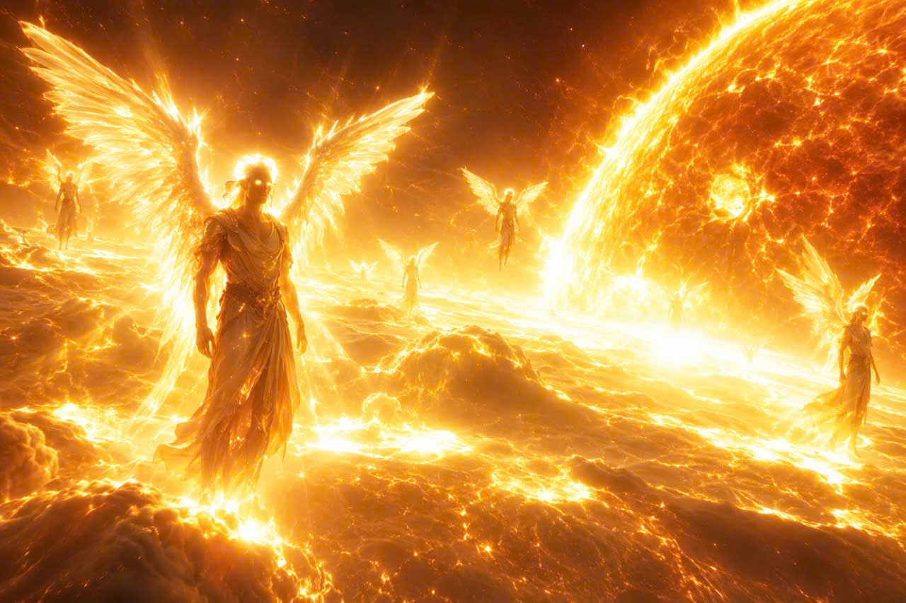

Người U là một chủng tộc sinh sống quanh đế quốc Umia-Đế chế thiên đàng đã được một thiếu niên người Ye khai báo với các nhà khoa học trong một lần sặc tinh. Về đặc tính, họ có thể sử dụng năng lượng pờ nắc ma từ mắt, trí thông minh vượt bậc so với loài người. Người U mạnh nhất từng được biết đã trà trộn vào làm giáo viên toán ở trái đất vào những năm 19xx. Những hành động và các lần chạm tráng của cá thể này: Nhiều lần cản trở L.Q.K.P và K.S.D. Hai thanh niên đang luyện tập thể chất bằng việc đấm vào một cuốn sách bá khí hình 2 con heo thì bị một người U tấn công. Sau khi phát hiện một tên da đen không xuất đầu lộ diện và đang lẫn trốn, hắn quyết định lấy cái cớ là đọc nhầm tên để khai triển lazer đánh gãy cái chân què của tên nô lệ với khoản cách hơn 2 kilomet tấn. Khi 4 tên phản tặc đang bàn kế hoạch với lớp ngụy trang "chơi trò chơi" thì tên Linhlade đã đọc thần chú: "tứ trò bỉ", sau đó bốn tên lưu manh đã bị khuất phục bởi hào quang lade.

Người Um là một nhóm sinh vật sống chủ yếu tại bề mặt "mặt trời" được phát hiện bởi N.N Khopi sau nhiều tháng khổ dâm đến sặc tinh quan sát bằng kính thiên văn. Người Um có những đặc điểm như: biết bắn lade bằng mắt và dương vật, IQ cao hơn cả người U, lí do người Um có thể bắn lade là vì trên bề mặt mặt trời họ đã trồng một giống ớt có tên là "ớt cặc trời", loại ớt này chịu đc nhiệt độ cao và hút plasma như dinh dưỡng để sinh sống. Người Um ăn loại ớt này, ở những cá thể có tuổi thọ cao vì đã ăn quá nhiều nên bị nhiễm plade khiến những cá thể đó có thể bắn được lade.